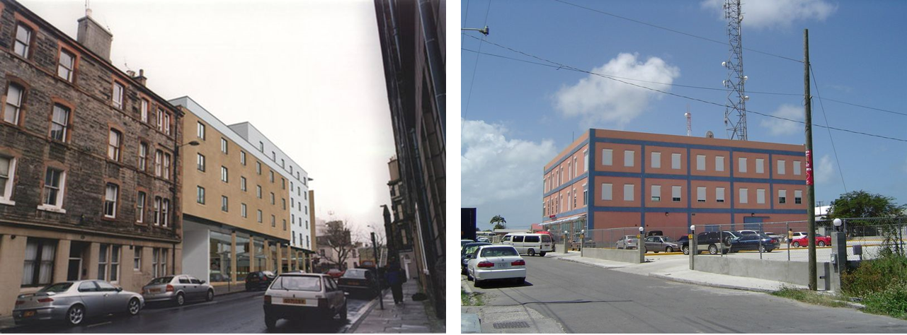

|
Ruisong Zhang （张瑞松）
M.S. Student
|
I am currently pursuing the M.S. degree at the National Laboratory of Pattern Recognition(NLPR), Institute of Automation, Chinese Academy of Sciences(CASIA) and University of Chinese Academy of Sciences(UCAS). My supervisor is Dr. Dong-Ming Yan. Before that, I received my Bachelor's degree of information security from Xidian University in 2019.
My research interest includes image processing and image forensics.
|

|
Distinguishing Computer-Generated Images from Natural Images Using Channel and Pixel Correlation
Ruisong Zhang, Weize Quan, Lubin Fan, Liming Hu, Dong-Ming Yan Journal of Computer Science and Technology (JCST), 2020 [Project Page] [PDF] [Code] [Slides] |